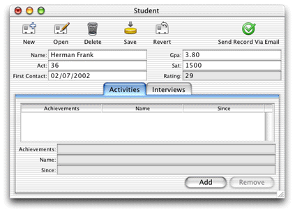

Using Assistant to add an action may not provide you with the flexibility you need. Furthermore, the methods you added in the last section are not really appropriate in business logic classes. They are better suited to a dedicated controller class.
Extending a controller class and writing a rule to use it is the best way to provide custom actions in your application. It is much more flexible than just using Assistant and it's much better than the next two options, which both require freezing XML. Anytime you freeze XML, you lose a lot of the dynamism of the rule system. This means, for instance, that you are not as able to use the rule system to localize your application or provide access controls via rules. Also, subclassing controller classes doesn't incur the costs associated with writing completely custom controllers.
The dynamically generated user interfaces in Java Client rely on a core set of classes: EOFormController; EOQueryController; EOListController. You can take real advantage of WebObjects' excellent object-oriented design to extend these classes to provide custom behavior.
Add a new file to your application called "CustomFormController.java." Add it to the Web Server target. Copy and paste the code for it, shown in Listing 5-1.
Listing 5-1 CustomFormController code
package admissions.client;
import java.io.*;
import javax.swing.*;
import java.awt.*;
import com.webobjects.foundation.*;
import com.webobjects.eocontrol.*;
import com.webobjects.eointerface.*;
import com.webobjects.eoapplication.*;
import com.webobjects.eogeneration.client.*;
import com.webobjects.eodistribution.client.*;
public class CustomFormController extends EOFormController {
public CustomFormController(EOXMLUnarchiver unarchiver) {
super(unarchiver);
}
protected NSArray defaultActions() {
Icon icon = EOUserInterfaceParameters.localizedIcon("ActionIconOk");
NSMutableArray actions = new NSMutableArray();
actions.addObject(EOAction.actionForControllerHierarchy("sendRecordViaEmail",
"Send Record Via Email", "Send Record Via Email", icon, null, null, 300, 50,
false));
return EOAction.mergedActions(actions, super.defaultActions());
}
public boolean canPerformActionNamed(String actionName) {
return actionName.equals("sendRecordViaEmail") ||
super.canPerformActionNamed(actionName);
}
public void sendRecordViaEmail() {
_distributedObjectStore().invokeRemoteMethodWithKeyPath(new EOEditingContext(),
"session","clientSideRequestSendRecordViaEmail", new Class[]
{EOEnterpriseObject.class}, new Object[] { selectedObject()}, true);
}
private EODistributedObjectStore _distributedObjectStore() {
EOObjectStore objectStore = EOEditingContext.defaultParentObjectStore();
if ((objectStore == null) || (!(objectStore instanceof EODistributedObjectStore)))
{
throw new IllegalStateException("Default parent object store needs to be an
EODistributedObjectStore");
}
return (EODistributedObjectStore)objectStore;
}
}
When you examine this code, you'll notice that two of its
methods are those you added in the last section. So you can remove
both sendRecordViaEmail and _distributedObjectStore from
the client-side Student.java class.
The defaultActions method adds to the application's
actions and canPerformActionNamed authorizes
the invocation of the sendRecordViaEmail method.
To use this class in form windows for the Student entity,
you need to add a rule to the project's d2w.d2wmodel file:
((task='form') and (controllerType='entityController')
and (entity.name='Student'))className"admissions.client.CustomFormController"50You add the d2w.d2wmodel file
to a project by making a new file of type "Empty File," naming
it "d2w.d2wmodel," and associating it with the Application Server
target.
Build and run the application and remove the action you added
with Assistant (you can either make this an "Other Property Key"
in Assistant or find the rule in the user.d2wmodel file
and delete it by hand). If successful, form windows for the Student
entity should look like Figure 5-29.
Figure 5-29 Image form window with new buttons
Clicking the Send Record Via Email button should send an email
with the current record's information to the recipients you declared
in the method in Session.java,
which constructs and sends the email.